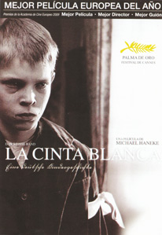

La cinta blanca
Un anciano sastre recuerda los extraños sucesos ocurridos entre julio de 1913 y agosto de 1914 cuando era maestro en la aldea protestante alemana de Eichwald, donde la mayoría de los habitantes trabajaban en el campo para el barón, la mayor autoridad junto con el pastor y el doctor.
Y todo comenzó precisamente cuando este último sufrió un accidente al tropezar su caballo con un cable casi invisible que alguien puso a la entrada de su casa.
Recuerda que aquel día le extrañó que los chicos se fuesen juntos en vez de regresar a su casa tras las clases, lo que les supuso un duro castigo a los hijos del pastor, que los deja sin cena, dándoles al siguiente 10 golpes con una vara, atándoles además una cinta blanca, símbolo de la inocencia por ellos traicionada para su vergüenza.
El suceso se olvida de inmediato debido a que al día siguiente murió la mujer de un campesino debido a un accidente mortal en la serrería del barón.
El maestro recuerda que conoció entonces a Eva, una muchacha de un pueblo cercano al suyo que cuidaba a los hijos gemelos del barón, a la que le pide un día cuando la ve que va a su pueblo salude a su padre, y con la que, posteriormente bailará en la fiesta de la cosecha organizada por el barón cada año al final del verano.
Durante la fiesta todos parecen divertirse bailando, comiendo y bebiendo. Aunque un vecino, el hijo de la campesina fallecida aprovecha mientras todos están en la fiesta para destrozar el campo de coles del barón, al que culpa de la muerte de su madre.
También durante la fiesta desaparece uno de los hijos del barón, por lo que todos los hombres, algunos aun borrachos, salen a buscarlo, encontrándolo en la vieja serrería atado boca abajo y con el culo ensangrentado tras haber recibido numerosos azotes.
Como consecuencia de lo sucedido Eva es despedida, pues la baronesa decide irse a vivir con ellos en la costa italiana.
Sin saber qué hacer, Eva le pide al maestro que la acoja por esa noche en su casa, prometiendo él acompañarla para decírselo a sus padres, que contaban con ese dinero para vivir.
Aunque sin estar curado del todo, el médico regresa al pueblo para hacerse cargo de sus hijos, a los que entretanto ha cuidado la comadrona, que además es su amante.
Enamorado de Eva, el maestro acude a verla a su pueblo el día de Navidad dispuesto a pedir su mano, aunque el padre de la muchacha le pide que espere un año.
Entretanto el pastor castiga a su hijo adolescente atándolo cada noche a la cama para evitar que se masturbe.
El muchacho que destrozó el campo de coles es puesto en libertad y regresa a su casa encontrándose con que su acción ha provocado que su padre no pueda trabajar para el barón, el cual despidió también a su hija, por lo que pronto sus hijos no tendrán nada que llevarse a la boca, lo que lleva a su padre al suicidio.
Por su parte el médico, decide terminar cruelmente las relaciones que mantenía con la comadrona, diciéndole que no la soporta, pues está ajada y huele mal, echándole ella en cara que ya era así cuando se hizo amante de ella pese a que entonces todavía vivía su esposa, a la que maltrataba como ahora la maltrata a ella, y que la verdadera razón por la que la abandona es porque se acuesta con su propia hija.
Con la llegada del nuevo año el pastor perdona y libera a sus hijos de la cinta blanca, a la espera de su próxima confirmación.
Después de la Semana Santa regresa la baronesa con una nueva niñera, con lo que se desvanece la posibilidad de que Eva regrese, por lo que decide ir a visitarla.
Va a pedir por ello al Administrador que le preste su carruaje para el sábado de Pentecostés, antes de la fiesta de la confirmación.
Mientras espera al Administrador habla con su hija Erna, la cual le dice que tiene sueños que se hacen realidad, pues, afirma que soñó que su hermano mayor dejaba la ventana abierta para que el bebé de la familia enfermara y muriera, y de hecho, aunque vivió, estuvo muy enfermo, y que ha tenido el sueño de que a Karli, el hijo retrasado de la comadrona le pasará algo muy malo.
El maestro pasa un bonito día con Eva con la esperanza de casarse pronto, pero a su regreso, y tras la fiesta de la confirmación desaparece Karli, al que encuentran en el bosque casi ciego tras haber recibido una brutal paliza, lo que hace que finalmente el barón recurra a dos policías que interrogan a todo el mundo, incluida Erna, cuyos poderes adivinatorios creen un camelo.
Unos días después varios muchachos juegan junto al río, lanzando uno de ellos al agua al hijo del marqués, al que le quite la flauta, reaccionando el administrador violentamente, dando una tremenda paliza a su hijo por el robo.
La baronesa, harta del pueblo y de su violencia le comunica a su marido que se irá con los niños, y que además está enamorada de otro hombre al que conoció en Italia.
Llegan justamente mientras discuten las noticias del asesinato del heredero del trono austriaco en Sarajevo, lo que supondrá poco después el comienzo de la I Guerra Mundial, una desgracia en la que el maestro verá la oportunidad de que el padre de Eva les permita adelantar su matrimonio.
Dispuesto a hablar con ella pide una bicicleta prestada para ir a la ciudad, siendo abordado por la comadrona, que le pide que le deje la bici, pues debe ir a la ciudad para hablar con la policía, ya que Karli le contó quiénes fueron sus agresores.
Le parece tan raro lo visto, que acude a ver a Karli, descubriendo que los chicos están merodeando su casa, tras lo que va a ver al doctor, encontrándose con que este se ha marchado con sus hijos sin haber avisado a nadie.
Trata de hablar con Klara y Martin, los hijos del pastor, los cuales simulan no saber nada. Tras ello hablar con el propio pastor, al que le expone sus sospechas de que los autores de todos los acontecimientos delictivos ocurridos durante los últimos meses son los chicos, entre los que se encuentran los propios hijos del pastor, el cual, indignado ante las insinuaciones le dice que tiene una mente enferma para llegar a tal conclusión, amenazándolo con tomar represalias si repite tales acusaciones.
Ante la guerra que se avecina los demás hechos parecen carecer de relevancia, insinuándose en el pueblo ante la desaparición de la comadrona y del doctor que estos eran amantes y que Karli era hijo del doctor, y que nació retrasado debido a que trataron de que ella abortara, acusándolos incluso de matar a la esposa de él.
Declarada la guerra el maestro se casa con Eva antes de ser llamado a filas, decidiendo, una vez acabada la guerra, y con el dinero de la herencia de su ya difunto padre, abrir una sastrería en la ciudad, no volviendo al pueblo.
Ya anciano se pregunta si todos esos extraños acontecimientos, no eran un presagio de lo ocurrido años después y fruto de la tiránica educación impartida.